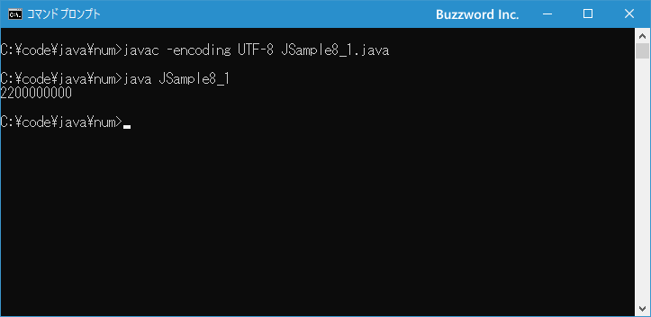

数値リテラルにサフィックスを付けて型を指定する
整数リテラルは特に指定しない場合 int 型の値として扱われ、浮動小数点数リテラルは double 型の値として扱われます。その為、例えば整数の場合に int 型の範囲を超えた数値を整数リテラルとして記述してしまうとコンパイルエラーとなります。このような場合に型を明確にするサフィックスを値の最後につけることでより大きな数値を扱える long 型の値として大きな整数を記述することができます。ここでは数値リテラルに対してサフィックスを付けて型を指定する方法について解説します。
サフィックスを使った型の指定
整数リテラルの場合、特に指定しない場合は int 型として扱われます。その為、整数リテラルとして int 型の最大値を超える値を記述してしまうとコンパイル時にエラーとなります。
int 型に格納できる数値の範囲は次のようになっており、最大値は 2147483647 です。
-2147483648 ～ 2147483647
簡単な例として次のようなプログラムを記述しコンパイルを行ってみます。すると「エラー: 整数が大きすぎます。」とエラーが表示されました。
class JSample{
public static void main(String[] args){
System.out.println(2200000000);
}
}
このような場合、サフィックスを付けて整数リテラルの型を指定することができます。値の最後に L または l を付けることで int 型ではなく long 型の値として扱われるようになります。(小文字の l は見間違いやすいので通常は大文字の L を使います)。
320L
long 型に格納できる数値の範囲は次のようになっており、最大値は 9223372036854775807 です。 int 型よりもかなり大きな数値を扱うことができます。
-9223372036854775808 ～ 9223372036854775807
では先ほどのプログラムを少し変更して値の最後に L を記述します。
class JSample{
public static void main(String[] args){
System.out.println(2200000000L);
}
}
今度は問題なくコンパイルをすることができました。
なお short 型や byte 型の数値であることを表すサフィックスはありません。 short 型や byte 型の変数に値を代入する場合には int 型の値を代入してください。(代入の仕方によっては明示的な型変換が必要となります。詳しくは「キャスト演算子と型変換ルール」を参照されてください)。
それでは簡単なサンプルプログラムを作って試してみます。テキストエディタで次のように記述したあと、 JSample8-1.java という名前で保存します。
class JSample8_1{
public static void main(String[] args){
System.out.println(2200000000L);
}
}
コンパイルを行います。
javac -encoding UTF-8 JSample8_1.java
その後で、次のように実行してください。
java JSample8_1

int 型の範囲では表現できない大きな数値を、整数リテラルにサフィックスの L をつけて long 型の整数として表現しました。
浮動小数点数リテラルのサフィックス
浮動小数点数リテラルの場合、特に指定しない場合は doubble 型として扱われます。浮動小数点数リテラルの場合もサフィックスを付けることができ、 D または d を付けた場合は double 型、 F または f を付けた場合は float 型となります。
3.2 # double型 3.2D # double型 3.2F # float型
ただ整数リテラルの場合と異なり、もともと 浮動小数点数リテラルは float 型よりも扱える範囲が大きい double 型として扱われており、扱える数値の範囲を大きくしたいためにサフィックスを付けるということはしません。
float 型の変数に浮動小数点数リテラルを代入する場合、サフィックスを付けないとリテラルが float 型の範囲の数値であってもエラーとなります。その為、 float 型の値として扱いたい場合に数値の最後に F を付けてください。
float num; num = 7.8; # コンパイルエラー num = 7.8F; # 問題なし
-- --
数値リテラルに対してサフィックスを付けて型を指定する方法について解説しました。
( Written by Tatsuo Ikura )

著者 / TATSUO IKURA
初心者～中級者の方を対象としたプログラミング方法や開発環境の構築の解説を行うサイトの運営を行っています。